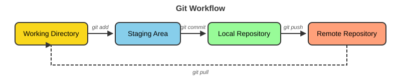
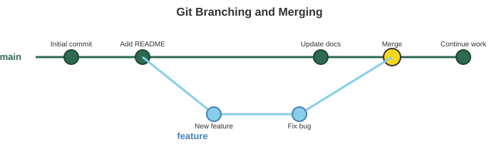
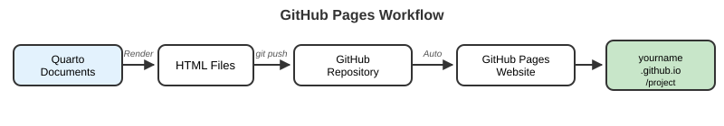

Git, GitHub and GitHub Pages
2026-11-16
The course book goes deeper on everything in this lecture. Read before or after class:
init, add, commit, push and pullOn your own this week
Work through this one-hour video alongside the book chapter
It covers today’s whole arc a second time, at a gentler pace
git --version - you installed Git at the bootcamp. Any version number = you’re fine. An error = raise your hand now, not at minute 30.Both done? Perfect - you’ll push code to the internet within 25 minutes.

Git workflow: working directory, staging area, local and remote repositories

Branching and merging
main# Set your name and email (ONCE per computer)
# use the same email as your GitHub account
git config --global user.name "Your Name"
git config --global user.email "your.email@example.com"
# Make every new repository start on a branch named 'main'
# (older Git versions default to 'master' - set this once and forget it)
git config --global init.defaultBranch main
# Check your settings
git config --listYou started this at the top of class - finish the email verification now if it’s still waiting. For reference:
GitHub stopped accepting account passwords from the command line in 2021 - the first git push is where everyone gets stuck. Three ways that work:
gh (cli.github.com), run gh auth login, pick HTTPS, and follow the browser prompt once. Done forever on that machine.ssh-keygen and paste the public half into GitHub → Settings → SSH keys - the same key pair you can use for Talapas in Week 10 (Ch. 19)Tip
If git push asks for a password and then fails with Authentication failed, nothing is broken - it means you are on the password path. Run gh auth login and push again.
We’ll do this live, together - a brand-new repository on your computer, then the same repository on GitHub, then the two connected:
# 1. Make a project and put it under version control
mkdir ~/projects/git_practice && cd ~/projects/git_practice
git init # creates the hidden .git/ folder
git status # read what it says - always
# 2. First commit
echo "# My first repository" > README.md
git add README.md
git commit -m "First commit"Tip
Fall behind? Keep watching - every step of today’s class is in Ex 8 to redo tonight at your own pace.
# 3. On github.com: New repository -> name it git_practice
# IMPORTANT: leave it EMPTY - no README, no license, no .gitignore
# (those would create a history that conflicts with yours)
# 4. Connect and push (GitHub shows these exact lines after step 3)
git remote add origin https://github.com/USERNAME/git_practice.git
git branch -M main # make sure your branch is named 'main'
git push -u origin main # -u: remember this pairing for future pushesNote
Why branch -M main? Older Git creates the first branch as master (harmless if yours is already main) - and GitHub takes the first branch you push as the repository’s default, so push main first and the two sides agree.
pullYour repository now lives in two places - so finish the loop:
push and pull are the same verb in opposite directions - this is also how you’ll move between laptop and Talapas in Week 10git pull → edit → git add . → git commit -m "..." → git pushTip
Lost or confused? git status always tells you the next command. And worst case: your work is on GitHub - delete the folder and git clone it back.
project/
├── README.md # Project description
├── data/ # Raw data (consider .gitignore)
├── analysis/ # Analysis scripts (.R, .py, .sh, .qmd)
├── results/ # Output files
└── docs/ # Documentation
From Quarto source to a live website
main, /docs - live at https://username.github.io/repo_nameoutput-dir: docs in _quarto.yml means quarto render fills docs/ and a push publishes it (quarto publish gh-pages is the one-command alternative)Bring back the website you built in L07 (example_website, with your details in it) - today it stops being local:
cd ~/projects/my_website # your website project from last week
# 1. Render into docs/ (_quarto.yml already has output-dir: docs)
quarto render
touch docs/.nojekyll # tells GitHub Pages: serve as-is
# 2. Exactly the walkthrough from earlier - plus the .gitignore
# from two slides ago, so Quarto's working folder stays out
git init
echo ".quarto/" > .gitignore
git add .
git commit -m "First commit: my academic website"
git branch -M mainmain, /docshttps://USERNAME.github.io/my_websiteTip
That URL is real, permanent, and free - put it in your email signature. Every future edit is just quarto render, git add ., git commit, git push.
git init your project folder (data excluded via .gitignore), commit, and push it to a GitHub repositorydocs/ folder - your analysis is now a live websiteREADME.md that says what the project is, where the data live, and how to reproduce the results (the example README is the model)Tip
This is exactly the shape of a modern reproducible paper: a repository anyone can clone, a report anyone can read, and a history of how it got there. HW2 goes out today (due Monday, November 30) and ends the same way - your analysis pushed to GitHub. Final projects are due Friday, December 11.
git switch (and git restore, two slides on) are the modern commands that split the overloaded git checkout in two - older tutorials say checkout, and both forms work:
# 1. Start your day - update your local copy
git pull origin main
# 2. Create a feature branch
git switch -c new-feature
# 3. Make changes and commit regularly
git add .
git commit -m "Add new analysis function"
# 4. Push your branch
git push origin new-feature
# 5. Create pull request on GitHub (via website)git diff and commit hashes7d4e8c2”) and use it anywhere a command wants a commitHEAD~1 is one commit backgit restore and resetting HEAD# Discard your edits to a file (back to the last commit) - GONE for good
git restore analysis.R
# Un-stage a file, keeping your edits
git restore --staged analysis.R
# Undo the last commit, three strengths:
git reset --soft HEAD~1 # undo commit, keep changes staged
git reset HEAD~1 # undo commit, keep changes unstaged
git reset --hard HEAD~1 # undo commit, DISCARD the changesWarning
restore (without --staged) and reset --hard delete real work with no confirmation. Run git status and git diff first, so you know exactly what you are throwing away. App. H has the full undo table.
The other way a repository reaches your laptop - someone else’s (or yours, on a new machine):
Keep going
(https://docs.github.com)(https://git-scm.com/book) (free online)(https://skills.github.com)(https://quarto.org/docs/publishing/github-pages.html)BioE Computational Tools 2026 - Knight Campus